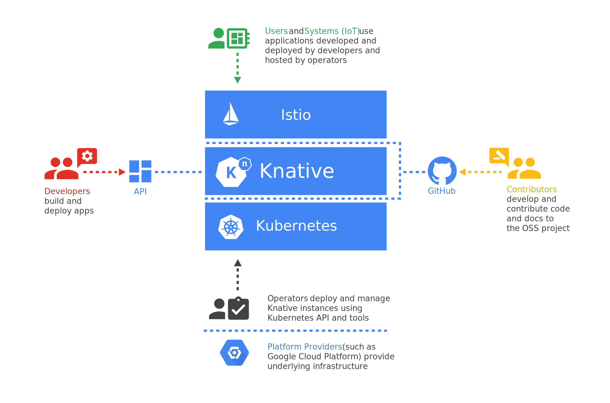

class: center, middle # **Introduction to Knative** ## The building blocks for the Cloud <hr> <br> <br> #### **Roberto Jiménez Sánchez**, Software Engineer at IBM #### **Simon Moser**, Senior Technical Staff Member at IBM --- class: center, middle # What is Knative? --- class: center, middle # Knative ## Kubernetes-based platform which provides the **building blocks** for serverless workloads --- class: center, middle # Serverless ## "cloud-computing execution model where server management and capacity planning decisions are completely hidden from the developer or operator" --- class: center, middle # **Serverless** = I don't care about servers, I care about my code --- class: center, middle # **Serverless** = applications, functions, one-off tasks, etc --- class: middle, center # Many Cloud providers are contributors --- class: middle, center # Lessons learned from other projects --- class: left # Some use cases * Auto-scaling applications (from 0 to N) * Build application from source code * Build Docker images * Blue-Green deployments * Versioned-applications * Traffic splitting * Event-driven applications --- class: center, middle # What is behind Knative? --- class: middle, center # Architecture  --- # Components * **Build**: Source-to-container build orchestration * **Serving**: Request-driven compute that can scale to zero * **Eventing**: Management and delivery of events --- class: middle, center # Service Definition <img src="images/service-definition.png" alt="Slogan" style="width: 600px;"/> --- ### **Configuration** — is the desired state for your service, both code and configuration ### **Revision** — represents an immutable point-in-time snapshot of your code and configuration ### **Route** — assigns traffic to a revision or revisions of your service ### **Service** — is the combined lite version of all the above objects to enable simple use cases --- class: center, middle # Demos --- # To wrap up * It offers really interesting primitives to run serlerless applications * It's still in early stages, but evolving rapidly * Developer experience needs to improve * Easily extensible * You can tap into the whole capabilities of Knative, Kubernetes and Istio. --- # Further readings * [Build, deploy, manage modern serverless workloads using Knative on Kubernetes](https://m.chmarny.com/build-deploy-manage-modern-serverless-workloads-using-knative-on-kubernetes-180c1a55e1b5) * [Running my first application on Knative](https://medium.com/@totemteleko/running-my-first-application-on-knative-ddaff2ce2ea0) * [How to run an application easily on Knative](https://medium.com/@totemteleko/how-to-run-an-application-easily-on-knative-946ee7e74b11) * [Bringing Cloud Foundry developer experience to Knative](https://medium.com/@totemteleko/bringing-cloud-foundry-developer-experience-to-knative-513d23e957f) --- class: center, middle # Questions? --- class: center, middle # Find us on Twitter ## Roberto Jiménez Sánchez **@jszroberto** ## Simon Moser **@mosersd**